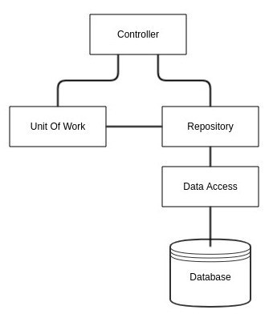
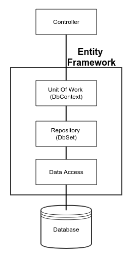

Repository 模式與 UnitOfWork 模式可說是充滿爭議，國外大神爭論不休，本篇不打算加入筆戰，只簡單提供幾個適合的應用的情境與範例，大家就自行選擇消化囉。
Repository 模式的好處
在軟體分層那篇文章中，資料存取層的實作便是 Repository 模式的體現，有效的將資料存取隔離於商業邏輯之外，當要抽換資料來源時，無須改動展示層與商業邏輯層(前提是 Repoistory 約定的介面沒有變動)。
專用型 IRepository 與 泛型 IRepository
我們先定義兩種應用的模式
- 專用型 Repository：一個 interface 實作 一個 Repository
1 | public interface IBlogRepository |
- 泛型 Repository：一個 interface 實作 一個 Repository，透過不同的 TEntity 來操作不同的資料表。
1 | public interface IGenericRepository<TEntity> |
當 Repository 有不同的介面方法的時候，專用型 Repository 能提供最大的彈性。
當 Repoitory 有固定的 CRUD 的介面方法，泛型 Repository 可以有效的減少重複的程式碼。
專用型 Repository 模式 with Daaper
而該架構對於 Dapper 這類輕量型 ORM 可以說搭配的如魚得水，因為 Dapper 執行我們定義好的 sqlcommand，專注在強型別的操作，故對於 Repository 的介面
並無直接的對應操作，也讓程式設計師有了較大的彈性去定義介面的方法，下面程式範例是專用型的寫法，改成泛型也是可以的喔。
DapperHelper
使用 Dapper 建議作個 DapperHelper 來隔離。
1 | /// <summary> |
Respository
1 | /// <summary> |
Repository 實作
1 | /// <summary> |
Service 的應用
注入 IBlogRepository 就可以使用。
1 | /// <summary> |
注入設定
Startup.cs 的注入設定
1 | /// <summary> |
專用型 Repository with Dapper 程式碼範例
專用型 Repository 模式 with EFCore
專用型 IRepository 搭配 EFCore 只需抽換 DapperHelper 的部分即可。
DBContext
EFCore 使用指定產生出 DBContext 如下
1 | /// <summary> |
Repository with DBContext 實作
Repository 介面與 Service 使用都不需修改，只需修改 Repository 實作的部分 (有沒有開始感受到分層抽離，依賴建介面的好處？)
1 | /// <summary> |
EFCore 的注入寫法如下
1 | /// <summary> |
專用型 Repository with EFCore 程式碼範例
泛型 Repository 模式 with EFCore
若按照上面的定義，EF 定義了每個 Entity 就是一個資料表，所以要搭配 Repository 模式 應該就是適合泛型 IRepository 囉 ?
答案是：不盡然，目前兩派爭論不休。
一派說法是: EF 的 Entity 其實完整實作了 CRUD 功能，如此再包一層 IRepository 定義的 CURD 是多此一舉?
而另一派說法則是:為了要隔離 EF 多一層 Repository 是必須的。
這兩派的說法其實個有道理，大家就採用自己相信的說法吧。而我是比較支持隔離這層的。
泛型 IRepository
1 | /// <summary> |
泛型 IRepository 實作
1 | /// <summary> |
注入
1 | /// <summary> |
此範例為簡單情境，只有一個 BlogRepositoy，故在 Startup.cs 作簡單註冊，若是有多個 Repository 可以用以下兩種方式
方法1 : Register with key
DI 設定
1 | services.AddScoped<ServiceA>(); |
產生實體
1 | public class Consumer |
方法2 : 實作多個 Repository，各別註冊
1 | services.AddScoped<IBlogRepository,BlogRepository(); |
BlogRepository, PostRepository 實作 IGenericRepository。
Repository Pattern & Unit Of Work (常見用法版)
一步步說明 UnitOfWork IRepository 與 Service 的問題
若事情只到這也就還好，但當 UnitOfWork 也進來之後，事情變得更複雜，主要原因是一般提供的 UnitOfWork 的作法有其問題，我們來一步步說明。
首先，關於IUnitOfWork 的定義實現
1 | /// <summary> |
接下來進行 Repository 的修改
1 | /// <summary> |
再來是 Service 的修改
1 | /// <summary> |
Repository Pattern & Unit Of Work (常見用法版) 程式碼範例
問題來了？在StudentService 中，StudentRepository 似乎變得有些多餘，因為它所做的，UnitOfWork 也都可以做，隨著項目的複雜，這樣就會造成很多的問題，比如：
- IUnitOfWork 的職責不明確。
- Repository 的職責不明確。
- Service 很困惑，因為它不知道該使用誰。
- Service 的代碼越來越亂。

較好的使用方式 - 職責分離
首先先調整 UnitOfWork 的介面與實作
1 | /// <summary> |
再來修改 Repository 的實作
1 | /// <summary> |
再來是 Service 的修改
1 | /// <summary> |
如此，是不是就明確許多。
整個專案的架構圖如下

Repository Pattern & Unit Of Work (職責分離版) 程式碼範例
總結
本篇完整介紹了 Repoistory 與 UnitOfWork 的應用範例，希望能幫助到大家。